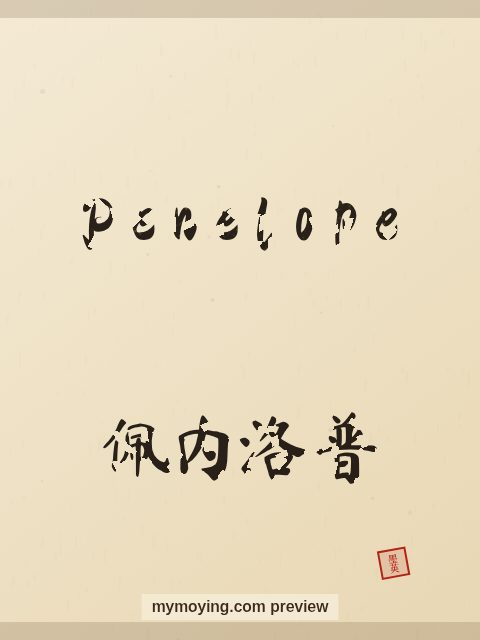

Penelope in Chinese Calligraphy
See how the name Penelope looks written with a traditional Chinese brush, next to its Chinese transliteration 佩内洛普 (Pèi nèi luò pǔ).

Sample. “Penelope” in the Regular (楷书) brush style with the Chinese name 佩内洛普 (Pèi nèi luò pǔ). The paid file removes the watermark.
The Chinese characters for Penelope
As a transliteration, Penelope is usually written 佩内洛普 (Pèi nèi luò pǔ). Each character is listed below with its own dictionary meaning — the name is chosen by sound, not by meaning, and Moying does not translate names. Please have a person review the characters before any permanent use such as a tattoo.
Origin and meaning
Penelope is a Greek name meaning “weaver (of uncertain origin)”.
About the name Penelope
In Homer's Odyssey, Penelope waited faithfully for Odysseus.
As a gift or a tattoo
Because it means “weaver (of uncertain origin)”, a Penelope calligraphy print makes a thoughtful gift for someone who loves the name or its meaning.
Open Penelope in the generatorFree watermarked preview. $1.99 once for a clean high-resolution download of this name in every style and setting. No subscription. Digital product, delivered instantly; see Terms.